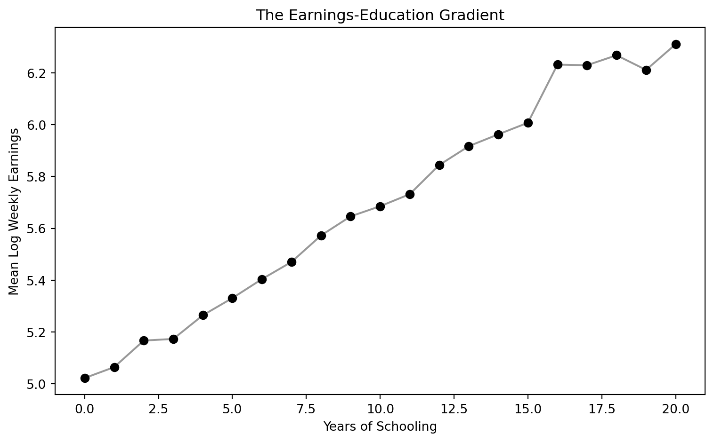
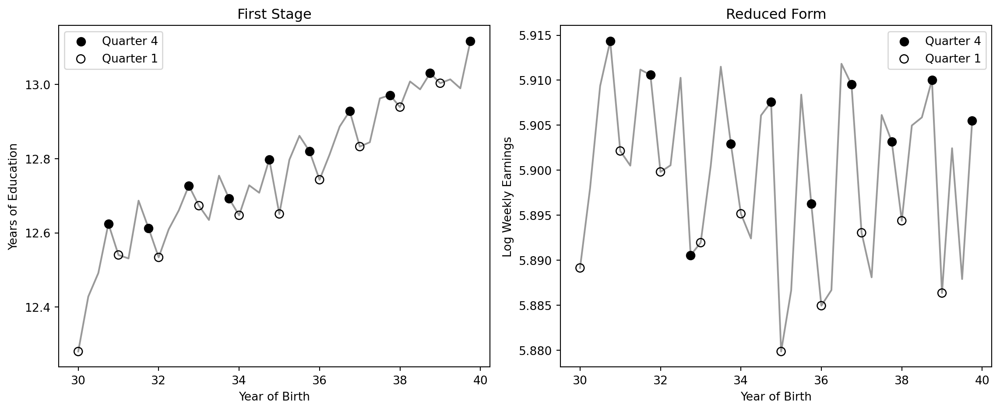
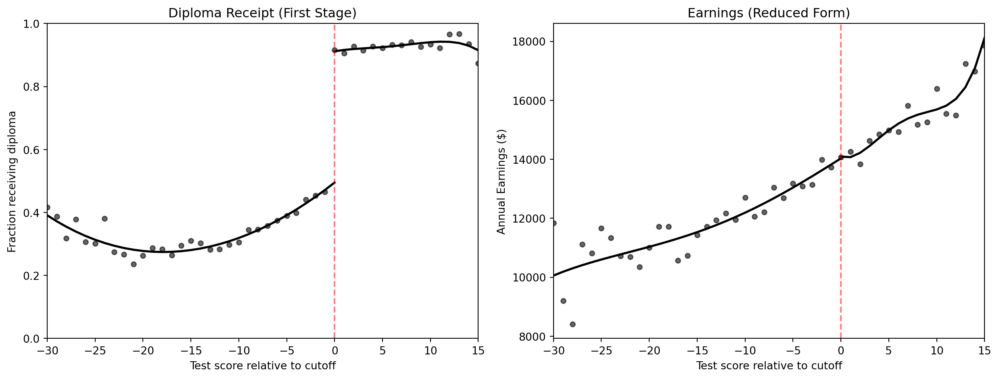
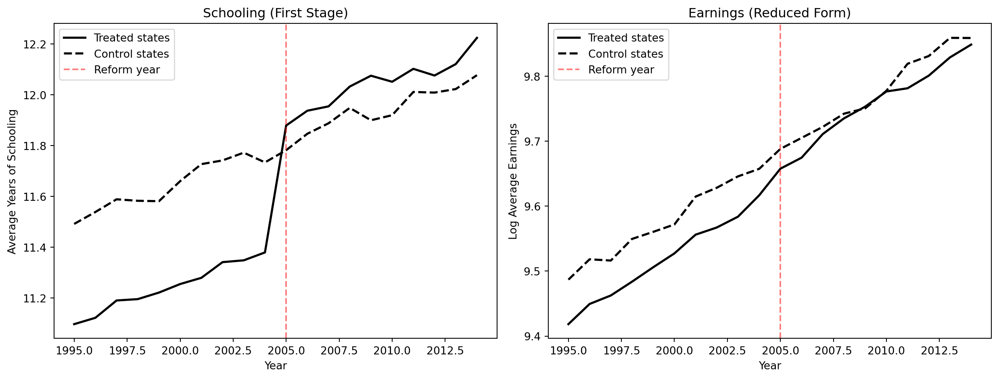

Act I
College graduates earn roughly twice as much as high school graduates.
How much of that gap does school cause — and how much is about who chooses to stay in school?

Average log weekly earnings by years of schooling — men born 1930–1939.
The gradient is steep and smooth. Is it a causal staircase, or a sorting of people by talent?
!pip install -q pyfixest # pyfixest is not preinstalled in Colab
import pandas as pd # pandas → load tables
import pyfixest as pf # pyfixest → regressions with robust SEs
GITHUB_DATA_URL = "https://raw.githubusercontent.com/cmg777/intro2causal/main/data/"
qob = pd.read_csv(GITHUB_DATA_URL + "ch6/qob_clean.csv") # 1980 Census, men born 1930–39
# log weekly earnings on years of schooling, robust (hetero) SEs
m = pf.feols("lnw ~ s", data=qob, vcov="hetero")
m.summary() # s: 0.0709 (0.0004) → ~7% per year| Rung | What it fixes | Its own weak spot |
|---|---|---|
| OLS | — (the starting point) | Ability bias |
| Twin comparisons | Shared genes and upbringing | Noisy schooling reports |
| Birth-quarter IV | Ability and noise | Applies to would-be dropouts |
| Child-labor-law IV | A second, policy-driven source of variation | Weak instruments |
| Diploma RD | Asks: skills or the piece of paper? | Only local to the pass mark |
| Reform DD | Before-vs-after policy comparison | Needs parallel trends |
This chapter is a capstone: every method in the course, aimed at a single parameter.
\(\rho\) — the percentage gain in earnings caused by one more year of school.
Able people study longer and earn more, so OLS credits school for talent.
Misreported schooling dilutes the signal and drags estimates toward zero.
Ability pushes estimates up; noise pushes them down. The chapter is a tug-of-war between the two.
Act II
\[\ln W_i = \alpha + \rho\, S_i + e_i\]
\(\ln W_i\) is log weekly earnings (lnw), \(S_i\) years of schooling (s); ability, motivation and family background all sit in \(e_i\).
\[\hat\rho_{OLS} = \rho + \text{ability bias}\]
If \(S_i\) is correlated with what sits in \(e_i\), OLS measures the return plus a bias.
\[\text{OVB} = \gamma \times \pi_1 > 0\]
Twist: if star talents drop out early to chase big opportunities, the bias could even turn negative.
| Twinsburg twins, OLS with controls | Coefficient (SE) |
|---|---|
| Years of education | 0.110 (0.010) |
| Age | 0.104 (0.012) |
| Age squared (÷100) | −0.106 (0.015) |
| Female | −0.318 (0.040) |
| White | −0.100 (0.068) |
Age, gender and race are not ability — so ~11% per year still carries any ability bias.
| Synthetic data (true return 0.09) | Schooling coefficient (SE) |
|---|---|
| Short regression: omit ability | 0.1229 (0.0024) |
| Long regression: include ability | 0.0853 (0.0036) |
| True causal return | 0.0900 |
In real data ability is invisible, so the long regression is a luxury we never get.
Adding occupation shrinks the coefficient from 0.123 to 0.100 — not less bias, but a lost pathway.
Never control for an outcome of the treatment: it is a bad control.
But a lottery for a scholarship that nudges schooling is imaginable — and shows what we are aiming for.
We need designs that mimic random assignment without forcing anyone’s education.
| Synthetic scholarship lottery (true return 0.08) | Estimate |
|---|---|
| Scholarship → schooling (first stage) | 1.958 years |
| Scholarship → earnings (reduced form) | 0.1605 log points |
| Per-year return (reduced form ÷ first stage) | 0.0820 |
\[\hat\rho = \frac{\text{reduced form}}{\text{first stage}}\]
A random push to schooling, scaled by how much schooling moved, isolates the return per year.
\[\Delta Y_f = \rho\, \Delta S_f + \Delta e_f\]
\(\Delta Y_f\) is the wage gap within twin pair \(f\) (dlwage); \(\Delta S_f\) the schooling gap (deduc). Anything both twins share drops out of the difference.
If ability is shared within a pair, differencing removes ability bias by construction.
| Method (Twinsburg twins) | Return to schooling (SE) |
|---|---|
| OLS with controls (levels) | 0.110 (0.010) |
| Twin fixed effects (differences) | 0.062 (0.020) |
Removing shared ability nearly halves the estimate — but is lower really closer to the truth?
!pip install -q pyfixest # pyfixest is not preinstalled in Colab
import pandas as pd # pandas → load tables
import pyfixest as pf # pyfixest → regressions with robust SEs
GITHUB_DATA_URL = "https://raw.githubusercontent.com/cmg777/intro2causal/main/data/"
twins = pd.read_csv(GITHUB_DATA_URL + "ch6/twins_clean.csv") # Twinsburg twins
first = twins[twins["first"] == 1] # keep one row per pair (no double counting)
# wage gap on schooling gap; "- 1" drops the intercept (equal school → no gap)
fe = pf.feols("dlwage ~ deduc - 1", data=first, vcov="hetero")
fe.summary() # deduc: 0.0617 (0.0198) → ~6%\[\hat\rho_{FE} \approx \rho \times \underbrace{\frac{\text{Var}(\Delta S^*_f)}{\text{Var}(\Delta S^*_f) + \text{Var}(\Delta m_f)}}_{\text{reliability ratio}}\]
\(\Delta S^*_f\): true schooling gap within a pair · \(\Delta m_f\): gap in reporting errors.
Twins have similar schooling, so errors dominate — a reliability ratio of 0.5 would halve the estimate.
| Method (Twinsburg twins) | Return to schooling (SE) |
|---|---|
| OLS (levels) | 0.110 (0.010) |
| Twin FE (differences) | 0.062 (0.020) |
| IV with co-twin’s report (levels) | 0.116 (0.011) |
| IV with co-twin’s report (differences) | 0.108 (0.034) |
An independent second measurement filters out the noise — and the return climbs back to ~11%.
Twins who attend a festival in Ohio are self-selected — they may not represent all workers.
If twins agree on a wrong answer, their reports share errors and the IV fix weakens.
Twin designs are clever but fragile; we need variation in schooling that is precisely measured.
1980 Census: 329,509 men born 1930–1939 (Angrist and Krueger, 1991). Instrument: born in the fourth quarter (q4).
Birth quarter is unrelated to ability, but it shifts how much school a would-be dropout completes.

Filled dots = Q4 births, hollow = Q1 births. Left: years of education; right: log weekly earnings.
The same saw-tooth appears in both panels: the first stage and the reduced form line up.
| Step | Estimate (SE) |
|---|---|
| Reduced form: Q4 → log earnings | 0.0068 (0.0027) |
| First stage: Q4 → years of school | 0.0921 (0.0132) |
| Wald ratio (reduced form ÷ first stage) | 0.0740 |
| 2SLS | 0.0740 (0.0280) |
A tenth of a year of extra school, worth 0.7% more pay, implies a return of about 7% per year.
!pip install -q pyfixest # pyfixest is not preinstalled in Colab
import pandas as pd # pandas → load tables
import pyfixest as pf # pyfixest → OLS and IV/2SLS
GITHUB_DATA_URL = "https://raw.githubusercontent.com/cmg777/intro2causal/main/data/"
qob = pd.read_csv(GITHUB_DATA_URL + "ch6/qob_clean.csv") # 1980 Census, men born 1930–39
fs = pf.feols("s ~ q4", data=qob, vcov="hetero") # first stage: Q4 → schooling (0.092)
rf = pf.feols("lnw ~ q4", data=qob, vcov="hetero") # reduced form: Q4 → earnings (0.0068)
print(rf.coef()["q4"] / fs.coef()["q4"]) # Wald ratio = 0.074
iv = pf.feols("lnw ~ 1 | s ~ q4", data=qob, vcov="hetero") # 2SLS: s instrumented by q4
iv.summary() # s: 0.0740 (0.0280) — same as the Wald ratioWould-be dropouts whose schooling was changed by their birth quarter — the LATE is their return.
College-bound students and very early leavers: their schooling does not depend on birth quarter.
7% is the return for students on the edge of leaving school — not necessarily for future graduates.
\[S_{scy} = \phi_1 CL7_{sc} + \phi_2 CL8_{sc} + \phi_3 CL9_{sc} + \beta_s + \gamma_c + \delta_y + v_{scy}\]
\(CL7, CL8, CL9\): state required school entry by age 7, 8 or 9 (cl7, cl8, cl9) · \(\beta_s\) state of birth · \(\gamma_c\) birth cohort · \(\delta_y\) census year — all absorbed as fixed effects.
Laws differ across states and cohorts, so a child’s required schooling depends on where and when they were born.
| Method (state, cohort, census-year FE) | Return to schooling (SE) |
|---|---|
| OLS | 0.0698 (0.0066) |
| IV / 2SLS (entry-age laws as instruments) | 0.1288 (0.0371) |
The instrumented return is larger than OLS — the opposite of what pure ability bias predicts.
| First stage: instrument → years of school | Coefficient (SE) |
|---|---|
| Entry required by age 7 | 0.1690 (0.0674) |
| Entry required by age 8 | 0.1872 (0.0621) |
| Entry required by age 9 | 0.3973 (0.0984) |
| Joint F-statistic | 6.06 |
Below the rule-of-thumb of 10, IV estimates are imprecise and can be biased — read 13% with caution.
!pip install -q pyfixest # pyfixest is not preinstalled in Colab
import pandas as pd # pandas → load tables
import pyfixest as pf # pyfixest → IV with absorbed fixed effects
GITHUB_DATA_URL = "https://raw.githubusercontent.com/cmg777/intro2causal/main/data/"
cl = pd.read_csv(GITHUB_DATA_URL + "ch6/childlabor_clean.csv") # state × cohort × census cells
# controls | fixed effects | endogenous ~ instruments; cell-size weights; cluster by state
iv = pf.feols("lnwkwage ~ 1 | sob + yob + year | indEduc ~ cl7 + cl8 + cl9",
data=cl, weights="weight", vcov={"CRV1": "sob"})
iv.summary() # indEduc: 0.1288 (0.0371) vs OLS 0.0698School builds skills. Students just above and below a pass mark have the same skills → no earnings jump.
The diploma signals ability to employers. Holding it should pay → an earnings jump at the pass mark.
Texas last-chance exit exam (Clark and Martorell, 2014): 46 score bins around the passing line.
An RD at the exam cutoff tests the value of the credential itself — the sheepskin effect.

Left: share receiving a diploma. Right: average annual earnings. Dashed line = passing score.
A big jump on the left, almost none on the right: the credential changes hands, the paycheck doesn’t.
| Jump at the passing score (quartic on each side) | Estimate (SE) |
|---|---|
| Diploma receipt (share) | 0.417 (0.011) |
| Annual earnings ($) | 62 (284) |
| Earnings level just below the cutoff ($) | ~14,000 |
The credential alone adds almost nothing — the premium comes from what students learn.

Synthetic data: 10 reform states (solid) vs 10 comparison states (dashed); reform in 2005.
Before 2005 the two groups move in parallel; after, reform states jump in schooling and their earnings catch up.
| Two-way fixed-effects DD (state + year FE) | Estimate (SE) |
|---|---|
| Reform → years of school (“first stage”) | 0.5039 (0.0165) |
| Reform → log earnings (“reduced form”) | 0.0393 (0.0055) |
| Implied return per year (ratio) | 0.0779 |
It is the same policy variation the child-labor-law IV uses — now read as before-vs-after.
!pip install -q pyfixest # pyfixest is not preinstalled in Colab
import pandas as pd # pandas → load tables
import pyfixest as pf # pyfixest → two-way fixed-effects DD
GITHUB_DATA_URL = "https://raw.githubusercontent.com/cmg777/intro2causal/main/data/"
did = pd.read_csv(GITHUB_DATA_URL + "ch6/synthetic_did.csv") # 20 states × 20 years
did["treat_post"] = did["treated"] * did["post"] # 1 = reform state after 2005
# DD with state and year fixed effects; cluster SEs by state
s = pf.feols("avg_schooling ~ treat_post | state + year", data=did, vcov={"CRV1": "state"})
e = pf.feols("avg_earnings ~ treat_post | state + year", data=did, vcov={"CRV1": "state"})
print(e.coef()["treat_post"] / s.coef()["treat_post"]) # implied return: 0.078| Design | Data | Return per year | Main weak spot |
|---|---|---|---|
| Simple OLS | 1980 Census | 0.071 | Ability bias (up) |
| OLS + controls | Twins | 0.110 | Ability bias (up) |
| Twin fixed effects | Twins | 0.062 | Noisy reports (down) |
| Twin IV (levels / diffs) | Twins | 0.116 / 0.108 | Shared misreports |
| Birth-quarter IV | 1980 Census | 0.074 | LATE for dropouts only |
| Child-labor-law IV | Census cells | 0.129 | Weak IV (\(F = 6\)) |
| Reform DD | Synthetic | 0.078 | Parallel trends |
| Diploma RD | Texas | ≈ 0 (credential) | Diploma only, not years |
Each design fails differently, yet all point to a sizable return — roughly 7–10% per year.
Act III
Objection. Differencing removes ability, so the smallest estimate (6%) is the cleanest.
Response. Differencing also magnifies reporting errors. Once the co-twin’s report corrects the noise, the within-pair return climbs back to about 11%. Lower is not the same as less biased.
Objection. At the Texas cutoff the diploma barely changes earnings, so education is worthless.
Response. The RD prices the paper, not the years. Earnings still rise steadily with skills, and the IV designs find 7%+ per year — school pays through learning, not the credential.